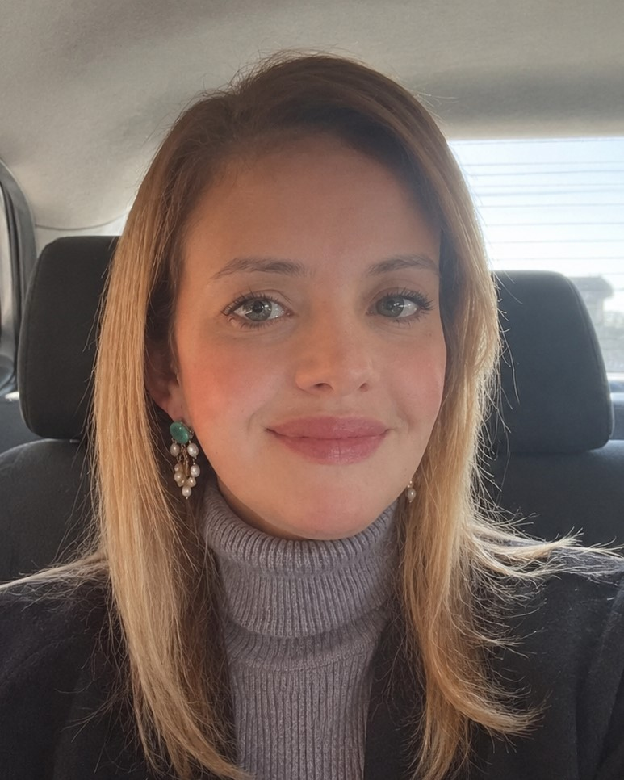

Layla Vicini Risato
Acolhimento, escuta e o cuidado socioemocional no SESI
Criada em uma casa cheia de presença feminina ao lado de duas irmãs, Layla Vicini Risato aprendeu desde cedo a valorizar a autonomia e o respeito às individualidades. Sua maior inspiração é a mãe, uma mulher independente que sempre incentivou as filhas a estudarem, aprenderem novos idiomas e buscarem a própria liberdade. Foi com essa bagagem familiar que Layla construiu sua vocação e, há um ano e meio, atua como mediadora educacional no SESI.
Com uma sólida formação que passa pelo magistério, pedagogia, psicopedagogia e neuropsicopedagogia, Layla acumula experiências em escolas públicas, privadas e no atendimento clínico. No SESI, sua missão é cuidar do desenvolvimento socioemocional da comunidade escolar.
"Ter esse setor permite um olhar diferenciado: olhar para vocês não só como alunos, mas como pessoas. Antes de tudo, vocês têm sentimentos, vivências e culturas diferentes", pontua.
Manter o próprio equilíbrio mental para poder acolher os outros é um dos seus maiores desafios diários. "Para conseguir escutar as pessoas, fazer uma mediação correta ou conversar com os pais em momentos delicados, eu preciso estar mentalmente bem", explica.
"Acho que aqui é uma válvula de escape, um lugar de acolhimento e de escuta onde os alunos têm voz." — Layla, sobre o papel do setor de mediação escolar
Para os estudantes, a mediadora deixa uma reflexão profunda sobre o futuro que vai além do currículo ou da escolha da faculdade:
Além disso, Layla reforça a importância de dar o melhor de si diariamente, sem esperar pelo momento perfeito, lembrando que cada dia conta.